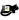
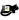

Hacking Docassemble Internals
Bryce Willey
@brycew@publicinterest.town
Why hack?
Here comes the firehose

Don't memorize all of this: it's in the docs
Some starting assumptions:
Don't have time to cover:
Install an editor
I recommend VSCode, but anything works
The Terminal
Download Docassemble
# If on WSL2 or Linux (no need on Mac)
sudo apt install git
git clone https://github.com/jhpyle/docassemble
Install Docker
Docker terminology

Run Docker
docker pull jhyple/docassemble
docker run \
--env WWWUID=`id -u` \
--env WWWGID=`id -g` \
--name mydocassemble
-p 80:80 \
-v ./docassemble:/tmp/docassemble \
-d \
jhpyle/docassemble
Some extra tips
docker run \
--cap-add SYS_PTRACE \
--memory="4gb" \
... # same as before
Our change: more logs

The Key components to hacking
- Exploring and Navigating the code
- reading the code
- surgical change
Live demo backup

Open a shell in docassemble
docker exec -it mydocassemble /bin/bash
The prompt will change to "root@a54e5b3:/#"
su www-data
source /usr/share/docassemble/local3.10/bin/activate
cd /tmp/docassemble
pip install --no-deps --no-index \
--force-reinstall --upgrade \
./docassemble_base ./docassemble_webapp ./docassemble_demo ./docassemble
touch /usr/share/docassemble/webapp/docassemble.wsgi
And so much more!
- going past surface level Flask and git
- Other systems in docassemble: pikepdf, sqlalchemy, redis, celery
- You don't have to learn it all at once!
Reach out on Slack; go forth and hack

 
